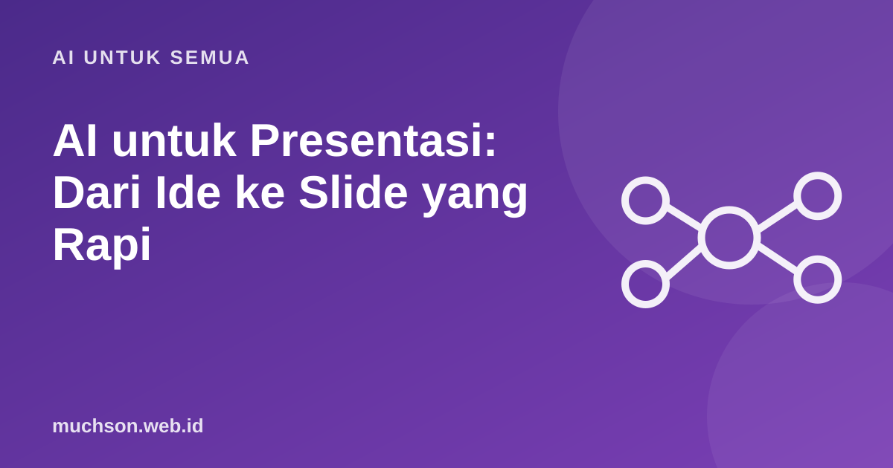

Beranda › Artikel › AI untuk Semua
AI untuk SemuaAI untuk Presentasi: Dari Ide ke Slide yang Rapi
Presentasi yang baik dimulai dari cerita dan pesan, bukan dari desain slide. AI sangat membantu di tahap kerangka dan latihan, sementara keputusan tentang pesan utama tetap milik Anda.

Mulai dari pesan, bukan slide
Aturan slide yang baik
Latihan dengan AI
- Minta AI berperan sebagai audiens yang skeptis dan mengajukan pertanyaan sulit.
- Latih jawaban 30 detik untuk tiap pertanyaan.
- Minta masukan tentang bagian yang membingungkan.
- Ukur waktu bicara, lalu potong yang tidak penting.
Tips
AI sering menghasilkan slide yang penuh poin generik. Ganti dengan contoh nyata dan data Anda sendiri. Itu yang membuat presentasi berkesan.
Tanya jawab
Apakah AI bisa membuat file PowerPoint?
Beberapa alat bisa membuat slide otomatis. Hasilnya perlu Anda rapikan dan periksa isinya.
Berapa jumlah slide ideal?
Tidak ada angka pasti. Acuan kasar: sekitar satu slide per satu sampai dua menit bicara, tetapi pesan dan ritme lebih penting.
Bagaimana mengatasi gugup?
Berlatih berulang, kenali materi dengan baik, dan siapkan awal presentasi yang kuat. Artikel tentang berbicara di depan umum membahas lebih lanjut.